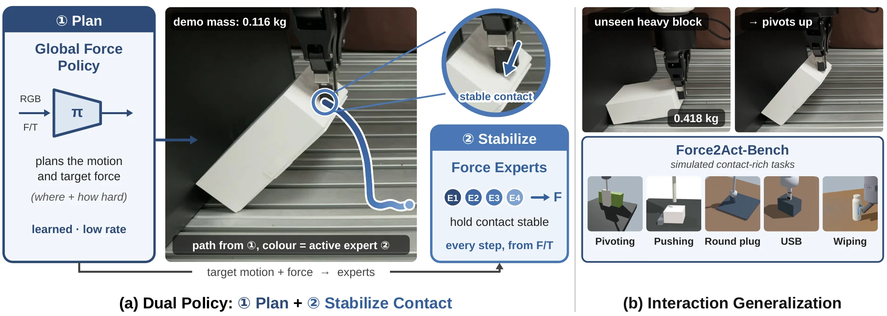
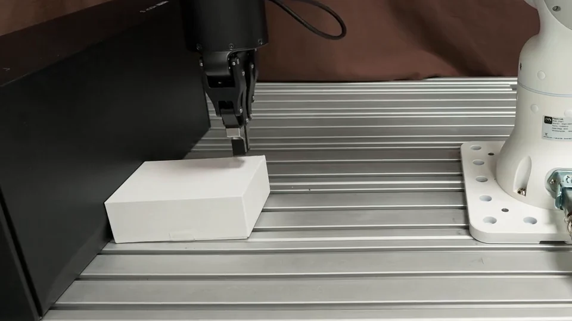
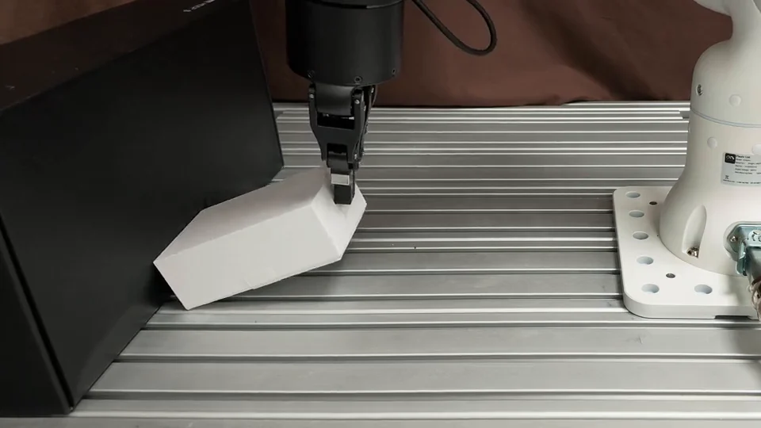
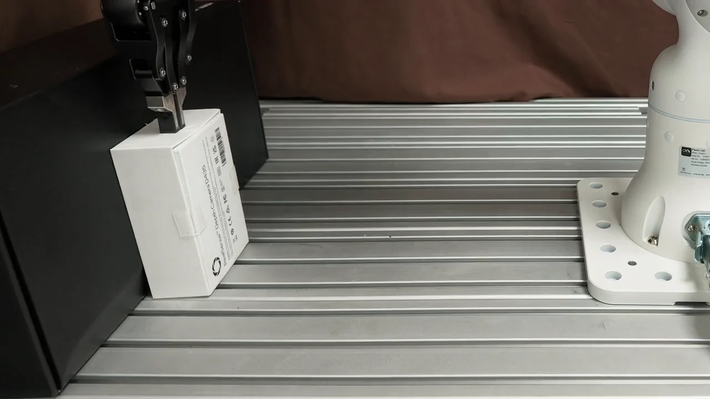
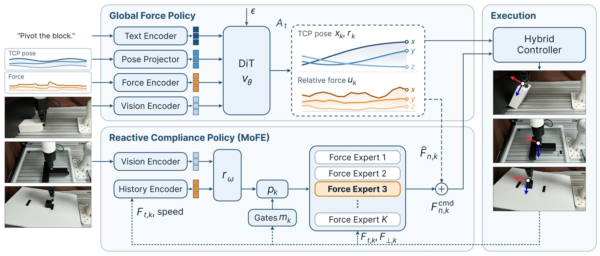

Contact-rich manipulation requires a robot to regulate the force it applies, not only where it moves. Existing force-aware policies learn this force from demonstrations and therefore reproduce the force levels they were trained on, which fails once the interaction demands more force than any demonstration. We present Force2Act, a hybrid force–position policy built on two complementary mechanisms. A global force policy plans the motion and the interaction force once per action chunk, with force represented relative to the measured interaction, so that the planned force scales with the load. Between planning steps, a reactive compliance policy, termed Mixture of Force Experts, identifies at every control step the force expert that governs the interaction and regulates the force through it, so that the contact holds when it changes within a chunk. We further introduce Force2Act-Bench, a simulation benchmark of five contact-rich tasks that gives the community a common and repeatable way to test force-aware policies and measure how well they regulate the interaction force. Force2Act achieves an overall success rate of 93.8%, compared with 77.0% for the strongest baseline, and its reactive regulation reduces the failures on block pivoting from 30 to 10 of 150 trials. On a real robot, Force2Act reaches an average success rate of 94.2% over four tasks, against at most 27.5% for the baselines.
A heavier object or a steeper support calls for a force that no demonstration contains. Acting correctly under interaction dynamics absent from the demonstrations is what we call interaction generalization.

Visuomotor and vision-language-action policies map images to motion. The contact force stays implicit, and a firm hold and the onset of a slip look alike in images.

Force-aware policies sense or predict force, supervised by recorded values, so they reproduce the force levels they were trained on.

Force is planned relative to the measured interaction and regulated at every control step by a force law evaluated on the current measurement.
The same unseen 0.418 kg block on the real robot, after demonstrations at 0.116 kg. Successes over 20 trials.
Force2Act separates contact-rich manipulation into planning the interaction and regulating it. Both policies are executed by a hybrid force–position controller.

A diffusion transformer trained by flow matching predicts future poses and wrenches from images, language, and pose and force histories. Wrenches are normalized by the recent force level st, so the policy decides the direction and timing of the force and the measurement sets its magnitude.
Seven force experts, each a physical force law Fn = c ψ + b with constants learned from demonstrations. Geometric gates exclude the experts that cannot apply, and a learned router selects one from the image and the recent tangential force and speed.
The controller regulates the force along the contact normal and tracks the planned pose in the remaining directions. The commanded force blends the selected expert with the planned force, which contributes the timing within the chunk.
Moves an object without slipping, so it presses harder as the tangential load grows.
Slips along the surface, as in wiping, at a prescribed force level.
The force acts along the motion and the contact carries a steady force.
The axial push also overcomes the friction from the sideways load.
The four contact cases of MoFE. No friction coefficient, mass, or force level of a task is given, and no frame is labeled with its contact case. These colours mark the selected expert in every rollout on this page.
Every policy is trained on the same demonstrations. Each row is one task: Force2Act on the left, then three baselines in the same condition. The coloured line under Force2Act is the force expert it selects.
Expert timelines are from logged Force2Act rollouts, aligned to the footage at first contact; for plug insertion, the logged rollout is aligned to the video by phase.
Each dot is one trial on a Flexiv Enlight L arm, filled if it succeeded. Force2Act is the best in every condition.
Each policy is trained on 50 demonstrations of block pivoting and 25 of each other task. * ManiFlow succeeds on the incline only by pressing about 3.8× harder than in the demonstrations, as its position target stays below the raised top face.
Five contact-rich tasks in Genesis for testing force-aware policies. Every policy observes a single external RGB camera, so the contact cannot be resolved from vision and must be inferred from force.
Success rate (%) over all 305 trials.
Rollouts of the released Force2Act policy on Force2Act-Bench, from the camera the policy observes. Block pivoting and the two insertions play at 2× speed, the others in real time.
Block pivoting, success (%) against block mass (kg).
Press-push box, success (%) against incline. No baseline solves every incline.
Force2Act keeps its success rate at every block mass and every incline, as its force follows the measured load. USB insertion, governed by lateral alignment rather than by the normal force, is the only task on which ACP and ForceVLA do better.
On block pivoting, the reactive regulation reduces the failures from 30 to 10 of 150 trials. The full tables are below.
Number of trials under each task. Bold marks the best result in a column.
The global policy alone is weakest where the load changes at test time, since its plan is executed open loop within a chunk. MoFE alone fails on block pivoting, since it does not plan when and where the force should rise. A policy trained on absolute force in newtons reproduces the magnitudes of its demonstrations.
Fell back: the block drops over 20° below its highest tilt. Stalled: timeout. No tip: tilt never above 10°. Contact loss is |F| < 1 N after first contact.
The MLP law replaces MoFE by a free slope and offset predicted at every step, trained for each task separately. Each component handles a particular kind of contact, so each variant loses different tasks.
Limitations. Force2Act regulates the force along a single direction, the contact normal, so tasks that require compliance in multiple directions or rotational compliance remain future work. All contacts in our tasks are rigid, so soft or deformable contacts are not considered.
@misc{murugan2026force2act,
title = {Force2Act: A Force-Aware Visuomotor Policy for
Generalizable Compliant Robot Manipulation},
author = {Murugan, Keerthi Vasan and Zhao, Fangguo and Duan, Jiafei},
year = {2026}
}